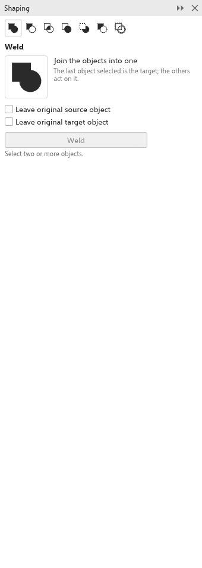

Tato stránka zatím není přeložena a zobrazuje se v angličtině.
Combining shapes: weld, trim and intersect
Shaping builds new shapes from overlapping objects: join them into one, cut one with another, or keep only where they overlap. The commands are in Object > Shaping, on the property bar when two or more objects are selected, and in the Shaping panel.
The target and the sources
The last object you select is the target: it gives the result its fill, outline and transparency. The other selected objects are the sources. To choose the target, select the sources first, then Shift+click the target.
The result goes on top of the active layer and is selected. Each operation is one undo step. When there is no result (for example two objects that do not overlap), nothing changes and the status bar says so.
The operations
| Operation | Needs | Result |
|---|---|---|
| Weld | 2 objects | one object covering all of them |
| Trim | 2 objects | the target without what the sources cover |
| Intersect | 2 objects | only the area all of them share |
| Simplify | 1 object | each object without what the objects above it cover |
| Front Minus Back | 2 objects | the front object without the ones behind it |
| Back Minus Front | 2 objects | the back object without the ones in front of it |
| Boundary | 1 object | an outline around the whole selection |
From the menu and the property bar, Weld removes the originals, Trim keeps the sources, Intersect keeps all of them, and Boundary keeps them all.
Open lines and pictures
- An open line cuts a shape. Trim with an open line, polyline or curve as a source crossing a closed target cuts the target along it into separate pieces, each keeping the target's fill and outline. Several lines make more pieces; a line that ends inside the shape cuts nothing, and the status bar says so. Front Minus Back and Back Minus Front split along open lines the same way.
- An open line as the target of Weld, Trim or Intersect is cut by the closed objects and stays open: Trim keeps the parts outside them, Intersect the part inside, and Weld adds the parts outside to the welded shape.
- An open line used as a source of Weld or Intersect on a closed object takes no part; to cut a shape along a line, use Trim or the Knife tool (see Cutting and erasing).
- A picture as the target of Trim, Intersect or Weld is cropped to the result: its frame takes the new shape and the picture shows inside it.
Areas filled side by side, and the results of Weld, Trim and Intersect, meet exactly where outlines cross, with no hairline gap between them.
The Shaping panel
Open the Shaping panel from Object > Shaping > Shaping.

- Click one of the seven picture buttons to choose the operation. The panel shows its name, a picture and what it does.
- For Weld, Trim and Intersect, choose what to keep: Leave original source object and Leave original target object. Each operation remembers its own choice.
- Select the objects, the target last.
- Click the button named after the operation. It stays pale until enough objects are selected, and a line says how many are needed.
Related: Combine (Ctrl+L) makes several objects one curve without changing their shapes, and Break Apart splits a curve into its parts again. See Objects and layers.